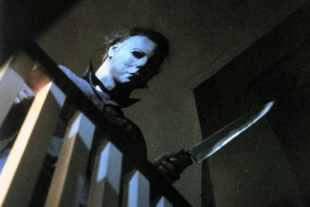

The 1970s marked a turning point in horror, moving away from classic monsters toward psychological and visceral terror. Filmmakers pushed boundaries with intense violence, disturbing themes, and realistic storytelling.
One of the scariest films ever made, The Exorcist terrified audiences with its depiction of demonic possession. Its shocking imagery, psychological horror, and religious themes made it a cultural phenomenon.
Tobe Hooper’s raw, documentary-style film introduced Leatherface, a chainsaw-wielding killer, and redefined horror with its unrelenting intensity. Its gritty realism, disturbing atmosphere, and relentless brutality set a new standard for terror, influencing countless films in the genre.
John Carpenter’s slasher masterpiece introduced Michael Myers, a seemingly unstoppable killer stalking teenagers. The film’s atmospheric tension and eerie soundtrack laid the groundwork for the slasher genre.
Combining science fiction with horror, Alien introduced one of the most terrifying creatures in cinema history: the Xenomorph. The film’s claustrophobic setting and slow-building tension redefined the genre.
| Nombre | ID | Carrera | Correo |
|---|---|---|---|
| Maria Jose Arévalo | 1094044725 | Jurisprudencia | mariaj.arevalo@urosario.edu.co |
| Daniela Cortes Rodriguez | 1095550727 | Jurisprudencia | daniela.cortesro@urosario.edu.co |